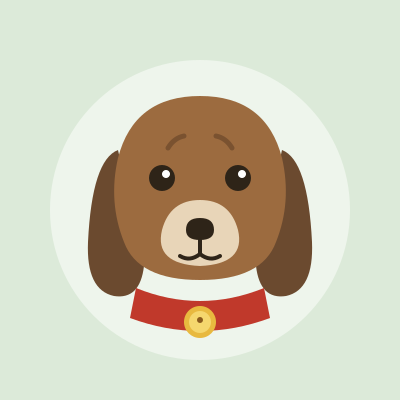
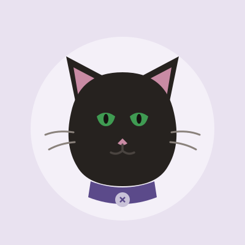
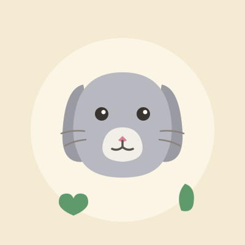
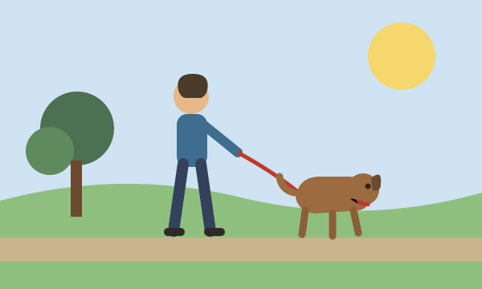

Every animal deserves a second chance.
We're a volunteer-run rescue in Cedar Falls that has placed more than 1,400 dogs, cats, and small animals into permanent homes since 2011. Every adoptable animal lives in a foster home — not a cage — so we can tell you exactly who you're bringing home.
Meet the animalsWaiting for a home
All adoptions include spay/neuter, vaccinations, microchip, and two weeks of follow-up support. Adoption fees: dogs $175, cats $95, small animals $40.

Biscuit
Dog · 2 years old · 38 lbs · house-trained
A gentle brown hound mix with ears bigger than his ambitions. Biscuit loves car rides, children, and napping in sunbeams. Walks nicely on a leash and already knows sit, stay, and shake.
Ask about Biscuit
Luna
Cat · 4 years old · indoor only · quiet home preferred
A sleek black cat with striking green eyes and strong opinions about closed doors. Luna is affectionate on her own schedule and would thrive as the only pet in a calm household.
Ask about Luna
Clover
Rabbit · 1 year old · litter-trained · bonded pair optional
A lop-eared gray rabbit who flops over the moment you scratch behind her ears. Clover is litter-trained, loves cilantro, and can be adopted with her brother Basil at no extra fee.
Ask about Clover
Get involved
We have no paid staff and no kennel building — this rescue runs entirely on neighbors who show up. Even one hour a week makes a real difference.
- Foster a dog, cat, or rabbit for two to eight weeks
- Walk dogs at our Saturday adoption events
- Drive animals to vet appointments
- Sort donations at the supply shed on Birch Road
Email volunteer@secondchancecf.example and we'll find the right job for you.
Adoption inquiry
Tell us a little about yourself and the animal you're interested in. We answer every inquiry within two days.